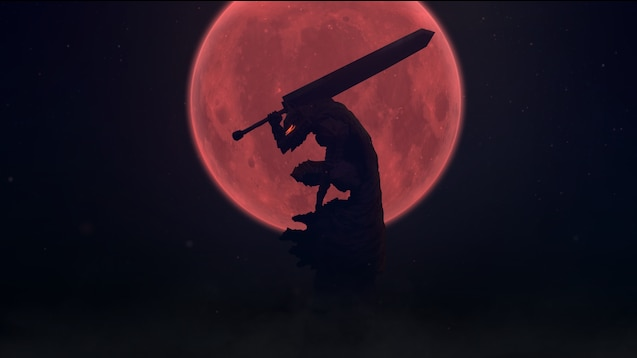

Olá, Matheus!
Home
Perfil
Sair
Informações sobre o Quiz:
1-Cada pergunta tem 15 segundos para ser respondida.
2-São 10 perguntas no total.
3-Cada resposta correta vale 10 pontos.
4-Se tentar refazer o teste, seus pontos serão zerados.
5-Cada pergunta tem apenas uma resposta correta.
6-Sua pontuação cresce de acordo com o tempo respondido.
Começar quiz
Tempo:16
Próxima
Pontos atuais: 0
Parabéns, você é um BERSERKER
